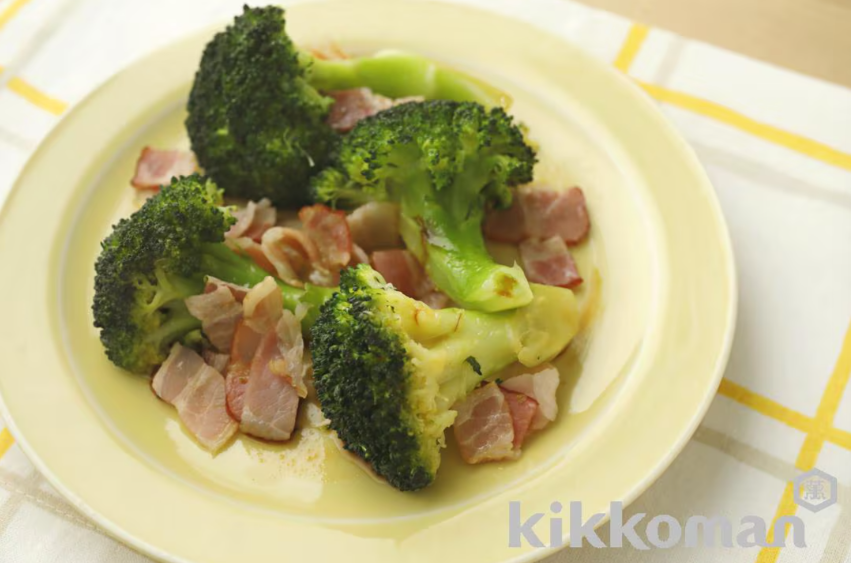

ブロッコリーの洋風蒸し煮【食物繊維が摂れるサプリ副菜】

材料（2人分）
ブロッコリー ... ２００ｇ
ベーコン（スライス） ... ２枚
オリーブオイル ... 小さじ２
水 ... 1/4カップ
キッコーマンいつでも新鮮しぼりたて生しょうゆ
... 小さじ1
作り方（調理時間:20分/目安）
ブロッコリーは小房に分け、大きければ半分に切る。ベーコンは１ｃｍ幅に切る。
２０ｃｍのフライパンにブロッコリーを広げ入れ、ベーコンをのせ、オリーブオイル、水を注いでふたをし中火にかける。
煮立ったらそのまま５～６分蒸し煮にする。ふたとってしょうゆをふり入れ、水分が飛ぶまで炒める。
引用元
キッコーマンレシピサイト「ホームクッキング」